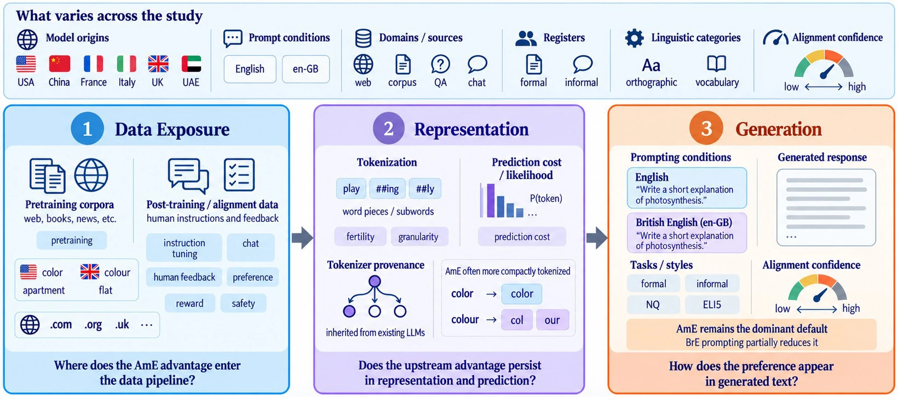
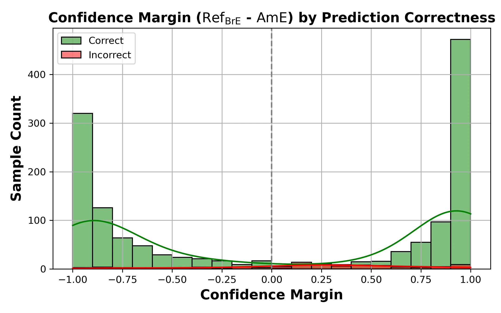

A pipeline-wide audit
Regional preference is measured across data exposure, representation, and generated language.
Triangulating structural bias towards American English across the LLM pipeline
1 University of Alberta

How does “English (US)” become a default in large language models? We trace American English (AmE) and British English (BrE) through training data, model representation, and generated language. The study uses 1,813 matched regional variants and introduces DIALIGN, a training-free method for estimating regional alignment from distributional evidence.
Across six pretraining corpora and 21 post-training datasets, AmE variants are more prevalent. AmE forms are generally more compactly tokenized, and BrE counterfactuals receive higher prediction cost under equal-token-count controls. Neutral English prompts produce predominantly AmE outputs; BrE prompting shifts the balance but does not consistently remove the AmE preference.
Regional preference is measured across data exposure, representation, and generated language.
DIALIGN estimates regional alignment from local distributional evidence beyond isolated spelling choices.
1,813 AmE–BrE pairs support consistent comparisons across the analyses.
The study builds a curated resource of 1,813 matched American-English and British-English variants. The pairs support comparable measurements across corpora, tokenizers, model likelihoods, and generated responses.
DIALIGN is a dynamic, training-free method for estimating regional alignment. It aggregates local distributional evidence from overlapping text spans, including lexical, grammatical, structural, stylistic, and multi-word patterns.
On a balanced benchmark of 1,500 news passages, DIALIGN reaches 93.18% accuracy and 93.38 F1.

| Level | American English (AmE) | Reference: British English (BrE) |
|---|---|---|
| Orthography | color · center · organize · traveling · favorite · check · jewelry · program · catalog · defense | colour · centre · organise · travelling · favourite · cheque · jewellery · programme · catalogue · defence |
| Vocabulary | cell phone · crosswalk · downtown · train station · parking lot · ZIP code · vacation · apartment · elevator · line · sidewalk · flashlight · soda · popsicle | mobile phone · zebra crossing · city centre · railway station · car park · postcode · holiday · flat · lift · queue · pavement · torch · fizzy drink · ice lolly |
| Grammar / usage | I just ate · on the weekend · Do you have a pen? · The team is winning · different than | I’ve just eaten · at the weekend · Have you got a pen? · The team are winning · different from |
| Conventions | double quotes · punctuation inside quotes · December 31, 2024 · first floor · 11:15 PM · 68°F | single quotes · punctuation outside quotes · 31 December 2024 · ground floor · 11.15 pm · 20°C |
The table summarizes the main empirical result at each stage. Regional preference is measured through different signals at each stage, so the values should be read within their respective analyses.
| Stage | Coverage | Key result |
|---|---|---|
| Data exposure | 6 pretraining corpora; 21 post-training datasets | All favor AmE. AmE accounts for 76.17% of 28.86 million matched-variant occurrences in the post-training data. |
| Representation | 9 tokenizers; 10 model checkpoints | AmE is generally more compactly tokenized. BrE counterfactuals receive higher per-token loss in all 10 checkpoints under equal-token-count controls. |
| Generation | 10 models; Natural Questions and ELI5 | AmE is the majority under neutral English prompts. British-English prompting moves outputs toward BrE, with effects that vary by model and register. |
The matched-pair design supports a consistent cross-stage comparison. These findings establish a recurring association; they do not isolate the causal contribution of each stage.
The results point to a pipeline-wide pattern rather than a generation-only quirk. Data composition, tokenizer design and lineage, post-training choices, and evaluation practices can all shape which variety is treated as ordinary.
This evidence motivates targeted audits and interventions at each stage, and raises questions about linguistic homogenization, representation, and equitable deployment. The study establishes consistent associations across the evaluated pipeline; it does not claim that any single stage alone causes the downstream preference.
How Does “English (US)” Become the Default? Triangulating Structural Bias Towards American English Across the LLM Pipeline.
@misc{nayeem2026englishdefault,
title = {How Does ``English (US)'' Become the Default?},
author = {Nayeem, Mir Tafseer and Rafiei, Davood},
year = {2026}
}